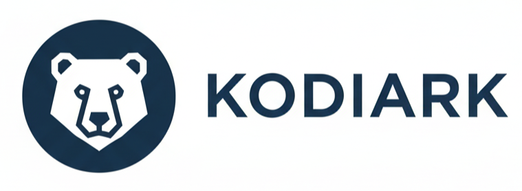

The Fastest Path from Concept to Production.
Kodiark accelerates software creation—automating the journey from an idea to running, enterprise-grade applications in record time.
Kodiark accelerates software creation—automating the journey from an idea to running, enterprise-grade applications in record time.